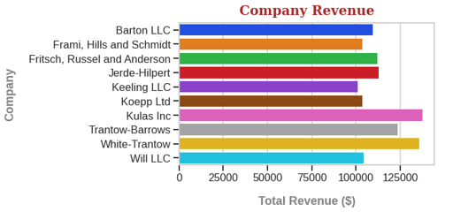
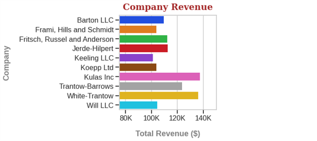

- Matplotlib은 자유도가 높은 만큼 건드릴 곳이 많아서 익숙해지기가 영 만만치 않습니다.
- 저도 이 바람에 Matplotlib을 버릴까 했으나 Matplotlib에 의존하는 라이브러리가 너무 많더군요.
- 피할 수 없다면, 헷갈리지 않게 그리는 방법을 익혀봅시다.
1
2
3
4import matplotlib.pyplot as plt
import matplotlib as mpl
%matplotlib inline
print(mpl.__version__)- 실행결과: 버전은 3.2.1. 기준입니다.
그 새 공식 버전이 올라갔습니다.1
'3.2.1'
- 실행결과: 버전은 3.2.1. 기준입니다.
References
matplotlib: The Lifecycle of a Plot
matplotlib: Pyplot tutorial
루나 brunch: 파이썬으로 빅데이터 시각화의 문을 열다, 존 헌터
- matplotlib이 헷갈리는 이유 중 하나는 두 가지 방식이 혼재한다는 것입니다.
- 보통 pyplot으로 입문하지만 이 문법은 pandas와의 연계용으로만 사용합시다.
- matplotlib에서 그림을 그리겠다면 object oriented에 집중하는 것이 효과적입니다.
1. matplotlib.pyplot
하나는 MATLAB 과 유사한 스타일의
pyplot입니다.데이터를 즉석에서 그려보기 편하며, 간단한 예는 다음과 같습니다.
1
2
3
4import matplotlib.pyplot as plt
plt.plot([1, 4, 9, 16])
plt.ylabel('some numbers')
plt.show()- 실행결과: x축도 정의하지 않았는데 그래프가 금방 그려집니다.
- 실행결과: x축도 정의하지 않았는데 그래프가 금방 그려집니다.
bar, scatter plot과 더불어 화면을 나누는 subplot도 가능합니다.
1
2
3
4
5
6
7
8
9
10
11
12names = ['group_a', 'group_b', 'group_c']
values = [1, 10, 100]
plt.figure(figsize=(9, 3))
plt.subplot(131)
plt.bar(names, values)
plt.subplot(132)
plt.scatter(names, values)
plt.subplot(133)
plt.plot(names, values)
plt.suptitle('Categorical Plotting')- 실행결과: 여러 종류의 plot을 동시에 그리고, suptitle도 달았습니다.
각 subplot은plt.subplot()으로 정의됩니다.
- 실행결과: 여러 종류의 plot을 동시에 그리고, suptitle도 달았습니다.
- pyplot은 그 자체로 상당한 기능이 있지만 우리는 앞으로 Object Oriented에 집중하겠습니다.
- Object Oriented가 더 기능이 많고, 세부적인 제어가 가능하며, 둘 다 익숙해지기엔 헷갈리기 때문입니다.
2. Object Oriented
- 저는 Object Oriented plot을 통상적으로 아래와 같이 진행합니다.
- seaborn이 기본적인 설정을 잘 잡아주기 때문에 seaborn을 함께 이용하고,
- fontdict를 사용해서 label과 title 등 text가 들어가는 부분의 형식을 처리합니다.
2.1. figure and axes
Customizing Matplotlib with style sheets and rcParams
seaborn.set_context
- 하얀 도화지를 펼치는 것으로 시작합니다.
Figure와Axes를 동시에 생성하는데Figure는 캔바스 자체,Axes는 그림의 여러 부분을 담고 있습니다.- Object Oriented interface에서는
Axes를 통해서 시각화 요소들을 제어합니다.1
fig, ax = plt.subplots()
- 실행결과: 도화지가 하나 깔립니다.
- 실행결과: 도화지가 하나 깔립니다.
- font, fontsize, axis range, grid style 등이
plt.rcParams에 기본값으로 정의되어 있습니다. - 그래프를 그린 후 일일이 설정할 수도 있으나 손이 두 번 가는 경우가 많습니다.
- 효율적인 방법 하나는 사전에 설정을 하고 나서 plot을 하는 것입니다. 일일이 하기보다 저장된 값을 불러오면 더 좋습니다.
- background color, grid color 등은
plt.style.use()를 사용하면 설정이 용이합니다. - fontsize, linewidth 등은 seaborn의
seaborn.set_context()를 사용하면 좋습니다. - 그림의 크기를 함께 바꿔봅시다.
plt.subplots()안에figsize=(가로, 세로)를 넣으면 됩니다.
단위는 inch입니다.1
2
3
4
5
6import seaborn as sns
plt.style.use('seaborn-whitegrid')
sns.set_context('talk')
fig, ax = plt.subplots(figsize=(7,3))- 실행결과: 시각화 기본 설정이 변경되었습니다.
- 실행결과: 시각화 기본 설정이 변경되었습니다.
2.2. Data Preparation
- 시각화에 사용할 예제 데이터를 만듭니다. dictionary로 만들어보겠습니다.
1
2
3
4
5
6
7
8
9
10
11
12data = {'Barton LLC': 109438.50,
'Frami, Hills and Schmidt': 103569.59,
'Fritsch, Russel and Anderson': 112214.71,
'Jerde-Hilpert': 112591.43,
'Keeling LLC': 100934.30,
'Koepp Ltd': 103660.54,
'Kulas Inc': 137351.96,
'Trantow-Barrows': 123381.38,
'White-Trantow': 135841.99,
'Will LLC': 104437.60}
group_data = list(data.values())
group_names = list(data.keys())
2.3. Bar Plot
- 데이터를 bar plot으로 표현합니다.
1
2fig, ax = plt.subplots(figsize=(7,4))
ax.barh(group_names, group_data)- 실행결과: horizontal bar plot이 출력됩니다.
- 실행결과: horizontal bar plot이 출력됩니다.
- 잠시 pandas와의 연계기를 살펴보겠습니다. (안수빈님 제안 감사드립니다)
- pandas의
DataFrame.from_dict()기능을 이용해서 dataframe을 만듭니다.1
2
3import pandas as pd
df = pd.DataFrame.from_dict(data, orient='index', columns=['revenue'])
- dataframe에 직접
.plot()을 수행합니다. 가로방향 bar plot이니kind='barh'를 넣습니다.1
df.plot(kind='barh')
- 실행결과: 깔끔하게 bar plot이 나왔습니다.
이 그래프도 여러 옵션을 통해 아름답게 만들 수 있지만, 본 글에서는 다루지 않겠습니다.
- 실행결과: 깔끔하게 bar plot이 나왔습니다.
2.4. Color Setting
- bar 색상이 좀 어두워서 아쉽습니다.
ax.barh()안에color='blue'처럼 색상을 지정하는 식으로 색상을 변경할 수도 있지만 번거롭습니다.- 앞으로 그릴 그림들의 색상을 일괄적으로 변경합시다.
- seaborn의
seaborn.set_palette가 이럴 때 편리합니다.1
2
3
4sns.set_palette('bright')
fig, ax = plt.subplots(figsize=(7,4))
ax.barh(group_names, group_data)- 실행결과: bar 색상이 변경되었습니다.
- 실행결과: bar 색상이 변경되었습니다.
- barplot 자체를 seaborn으로 그릴 수도 있습니다.
1
2fig, ax = plt.subplots(figsize=(7,4))
sns.barplot(group_data, group_names)- 실행결과: bar마다 다른 색상이 적용되었습니다.
자세히 보니 matplotlib과는 y축 label 순서가 뒤집혀 있네요.
- 실행결과: bar마다 다른 색상이 적용되었습니다.
2.5. Titles and Axes Labels
matplotlib.axes.Axes.set_xlabel
matplotlib.axes.Axes.set_title
matplotlib: Text properties and layout
Pega Devlog: Matplotlib Defaults & Fonts
- x와 y축에 label을 붙이고 plot title을 설정합니다.
- x축 label은
set_xlabel()로, plot title은set_title()로 설정할 수 있습니다.1
2
3
4
5
6fig, ax = plt.subplots(figsize=(7,4))
sns.barplot(group_data, group_names)
ax.set_xlabel('Total Revenue')
ax.set_ylabel('Company')
ax.set_title('Company Revenue') - font size, color 등을 변경하고 싶을 때는
fontdict를 사용하면 편리합니다. - dictionary 형식으로 설정값을 정리한 후 넣어주는 방식입니다.
- label, title과 ticklabels와의 거리는 추가 인자로 지정할 수 있습니다.
- [ 주의 ] 거리를 지정하는 인자 이름이 label에서는
labelpad, title은pad입니다.1
2
3
4
5
6
7
8
9
10
11
12
13
14
15
16
17
18
19
20
21
22
23font_label = {
'color': 'gray',
'weight': 'bold'
}
font_title = {
'family': 'serif',
'size': 20,
# 'backgroundcolor': 'yellow',
'color': 'brown',
'weight': 'bold',
'verticalalignment': 'baseline',
'horizontalalignment': 'center'
}
fig, ax = plt.subplots(figsize=(7,4))
sns.barplot(group_data, group_names)
ax.set_xlabel('Total Revenue ($)', fontdict=font_label, labelpad=20)
ax.set_ylabel('Company', fontdict=font_label, labelpad=20)
ax.set_title('Company Revenue', fontdict=font_title, pad=12)
plt.show()
2.6. Axis Range and Tick Format
- 예제 데이터의 X축인 Total Revenue의 범위가 모두 100000 이상입니다.
- 데이터간 차이를 집중해서 보여주기 힘들고, 공간이 낭비되는 경향이 있으니 바꿔봅시다.
- 아래 줄을 위 코드에 추가합니다.
1
ax.set_xlim(75000, 150000)
- 이번엔 x축에 있는 숫자가 영 헷갈리네요. 0이 너무 많아 헷갈립니다. x축 숫자를 돌려보겠습니다.
set_xticklabels()에rotation=45를 넣으면 되는데, label을 함께 넣어야 합니다.labels=[8000, 10000, 12000, 140000]처럼 넣을 수도 있지만 기존 ticklabel을 그대로 살려보겠습니다.- plot에 있는 데이터를 추출할 때는
get_()형식의 함수를 사용하고, 여기선get_xticks()명령을 사용합니다.1
2
3
4xlabels = ax.get_xticks()
print(f'xlabels type={type(xlabels)}, \nxlabels={xlabels}')
ax.set_xticklabels(xlabels.astype('int'), rotation=45,
horizontalalignment='right')- 실행결과: xticks는
numpy.array로 추출되었습니다.
float type이기 때문에.astype('int')를 붙여 정수로 변환하고 소수점을 떼냅니다.1
2xlabels type=<class 'numpy.ndarray'>,
xlabels=[ 60000. 80000. 100000. 120000. 140000. 160000.]
- 실행결과: xticks는
- 45도로 돌리니 조금 나은 듯도 하지만 여전히 0이 너무 많습니다. K를 붙이고 0 세 개를 떼냅시다.
- 공식 tutorial에서는
ticker.Funcformatter()를 사용하고 있습니다만, 좀 복잡합니다. - 간단하게 list comprehension으로 처리해 보겠습니다.
1
ax.set_xticklabels([f'{xlabel/1000:0.0f}K' for xlabel in xlabels])
2.7. Additional Information
matplotlib.axes.Axes.axvline
matplotlib: Text properties and layout
matplotlib.axes.Axes.annotate
- 종종 데이터 외에도 데이터를 읽기 좋은 부가 정보를 추가해야 할 때가 있습니다.
- 예를 들면, 데이터들의 평균 값을 표시하거나 데이터에 레이블을 달아야 할 때가 있습니다.
- 예제 데이터(회사별 수익)의 평균과 신규 업체를 표시해 보겠습니다.
- 평균 수익은 전체 수익의 평균을 구해서 수직선을 그어 표시합니다:
ax.axvline() - 수직선이 평균이라는 것을 알려주기 위해 화살표와 텍스트를 추가합니다:
ax.annotate() - 신규 업체는 bar 위에 글자를 써서 표시합니다:
ax.text()1
2
3
4
5
6
7
8
9
10
11
12
13
14
15
16
17
18
19
20
21
22
23
24
25import numpy as np
font_text = {
'size': 10,
'color': 'white',
'weight': 'bold',
'horizontalalignment': 'left',
'verticalalignment': 'center'
}
# Add a vertical line, here we set the style in the function call
group_mean = np.mean(group_data)
ax.axvline(group_mean, ls='-', lw=3, color='#8C87')
# Add average
arrowprops = {
'arrowstyle': '->'
}
ax.annotate("average", (group_mean, 2.5), xytext=(125000, 2.5),
color='green', fontfamily='serif', fontstyle='italic', fontsize=15,
arrowprops=arrowprops)
# Annotate new companies
for group in [3, 5, 8]:
ax.text(80000, group, "New Company", fontdict=font_text)
- 전체 코드가 담긴 노트북은 여기에서 다운로드 가능합니다.